Web Security Hub 画像付きハンズオン
English · 講師用ガイド · 機能対応
目的は、架空の研修申請サイトを使って「対象を登録する → テストを作る → 編集する → 変更を見つける → 診断する」を体験することです。サイト登録先と診断対象を取り違えないよう、Hub は 4173、サンプルサイトは 4180 を使います。
Node.js 22 以上と npm を準備してください。基本コースには Docker、ZAP は不要です。所要時間の目安は 60〜90 分です（初回ダウンロードを除く）。コマンドはすべてリポジトリのルートで実行します。
画面は左の機能ナビゲーションで切り替えます。サイト管理は「基本設定」「ログイン」「Basic 認証」「シナリオ」「操作記録」、再実行は「実行設定」「ケース編集」のタブに分かれています。動的診断の保存済みシナリオは「認証・シナリオ」タブで選びます。結果とログは右側に表示され、長い内容は各領域内でスクロールします。
T01 起動と初期化
npm install
npx playwright install chromium
npm run training:setup
npm run training:start
このターミナルは開いたままにし、別のターミナルで次を実行します。
npm start
training:setup は training-ja / training-en のサイト設定と架空の認証情報をローカルに作成します。既存設定は上書きしません。教材の初期設定へ戻すには npm run training:setup -- --reset を使います。この操作はこの二つのサイト設定とデモ認証情報を初期化します。既存セッション・ベースラインは残ります。
サンプルのモードを初期化するには、サンプル起動中に次を実行します。
npm run training:mode -- reset
サンプルへの申請は保存されません。モードはメモリ内にあり、再起動すると基本版に戻ります。複数受講者はそれぞれ自分の環境で起動してください。モード変更は同じサーバーを利用する全ブラウザーへ反映されます。
T02 サンプルサイトを操作する
日本語サンプルを開き、以下でログインします。
| 入力欄 |
値 |
| メールアドレス |
learner@example.test |
| パスワード |
training-only |
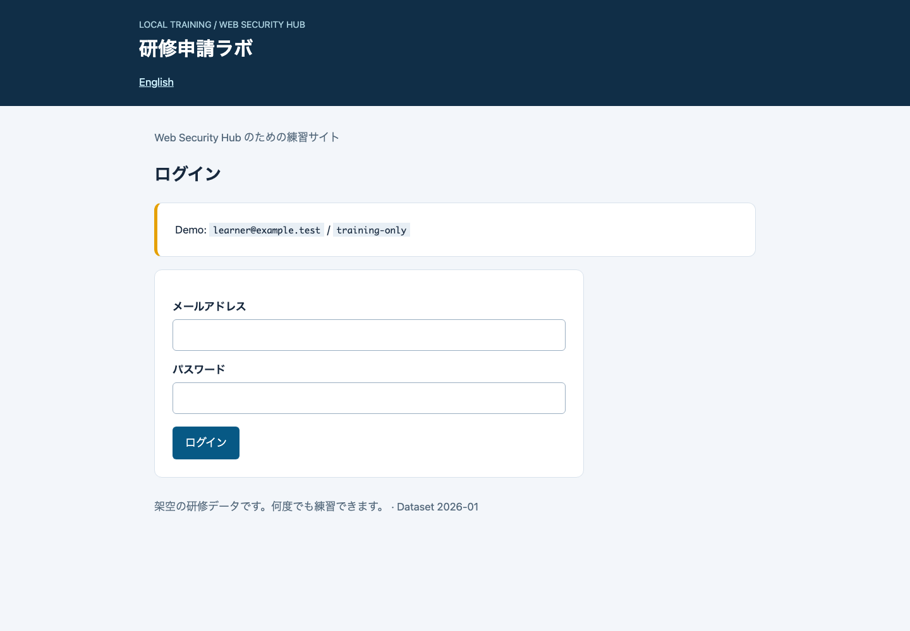
ダッシュボードの「研修に申し込む」を押します。氏名、メール、参加人数を入力し、申請してください。人数は 1〜5 人です。正常なら受付番号 LAB-0001 の完了画面に進みます。上限を超える入力では送信できないことも確認します。
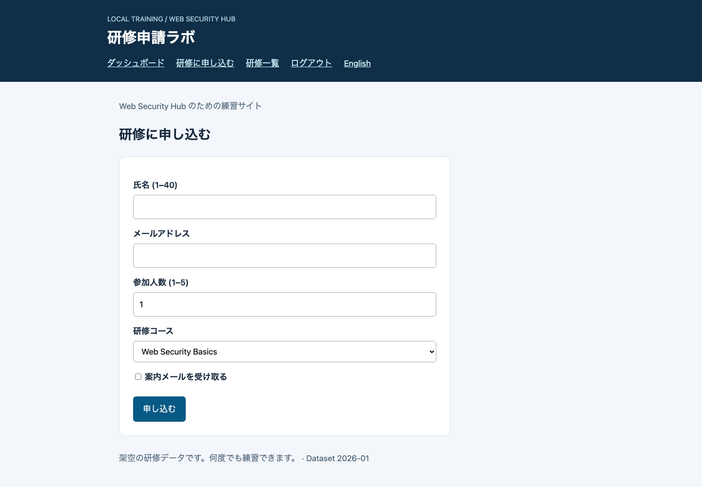
T03 Hub でサイトを登録・確認する
Hub 右上の言語を「日本語」、上部のサイトを「研修ラボ（日本語） / training-ja」にします。
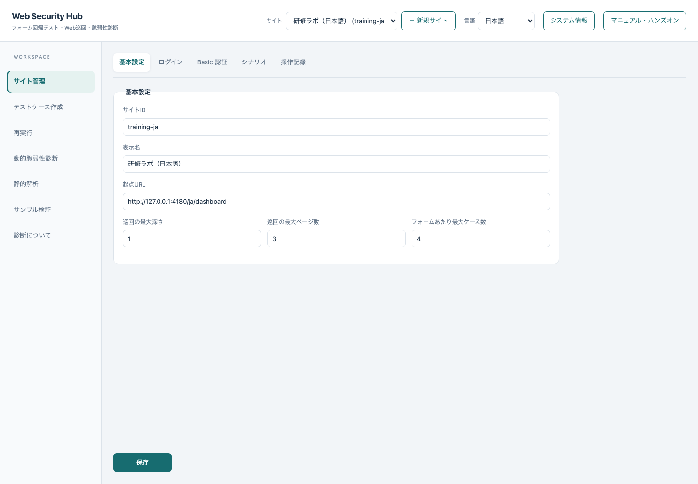
登録操作も練習する場合は「＋ 新規サイト」で次を入力してください。自動作成されたサイトを使う場合は、同じ値が設定されていることを確認して先へ進めます。
| 項目 |
値 |
| サイト ID |
training-ja-practice（新規登録時） |
| 表示名 |
研修練習 |
| 起点 URL |
http://127.0.0.1:4180/ja/dashboard |
| 最大深さ／ページ数／ケース数 |
1 / 3 / 4 |
| ログイン URL |
http://127.0.0.1:4180/ja/login |
| ユーザー名／パスワード／送信セレクタ |
#email / #password / #sign-in |
| ログインユーザー名／パスワード |
learner@example.test / training-only |
保存後に認証情報の入力欄が空になるのは正常です。値はサイトの .env に保存されています。サンプルのログイン画面と Hub の認証設定欄は別の用途です。
T04 操作を記録して保存する
「サイト管理」→「操作記録」タブを開き、対象操作の許可にチェックします。「パスワード以外の入力値を記録する」はオフのまま、「記録用ブラウザーを開く」を押します。
別ウィンドウのブラウザーで、ログイン済みのダッシュボードから「研修に申し込む」だけをクリックします。ここではフォームを入力・送信しません。 Hub に戻り「記録を停止してシナリオへ反映」を押し、JSON を確認して「保存」します。
記録操作が難しい環境では、次の JSON を「保存するシナリオ」に入力することで、同じ申請画面を開始点にできます。自動作成したサイトにはこの JSON が入っています。
{
"steps": [
{ "action": "goto", "url": "http://127.0.0.1:4180/ja/apply" }
]
}
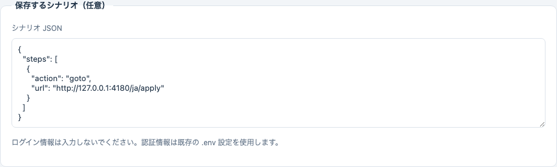
確認：JSON にパスワードがないこと、最終到達画面が申請フォームであること。クリック記録では click、直接移動では goto が入るため、JSON 全文が画像と一致する必要はありません。
T05 テストケースを作る
「テストケース作成」→「パイプラインを実行」を押し、完了を待ちます。巡回、フォーム解析、値生成、ケース実行、Playwright コード生成を行います。フォーム送信も実行するので、このサンプルを選択したことを確認してください。
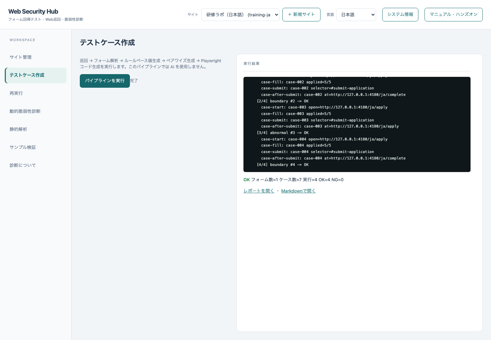
「レポートを開く」で発見したフォームとケースを確認します。人数の最小・最大、空欄、不正なメールなどの候補を探してください。ケース数を 4 に制限しているため、全組合せは含まれません。
生成時の OK は業務仕様全体の正しさの保証ではありません。特に異常値ケースの自動判定は、サーバーが期待どおり拒否したことの厳密なアサーションとは異なります。次の演習では入力を明示して比較します。
T06 ケースを編集する
「再実行」の「実行設定」で T05 のセッションを選び、「ケース編集」タブの「読み込む」を押します。最初の 1 行を残して他の行を削除し、残った行を次の値にします。
| 列 |
値 |
| name |
Demo Learner |
| contact |
learner@example.test |
| participants |
5 |
| course（列がある場合） |
web |
| updates（列がある場合） |
off |
「保存して再生成」を押します。編集はこのセッションの YAML と生成 spec に反映されます。元の生成レポートは再作成されないため、編集後の結果は再実行レポートを確認します。
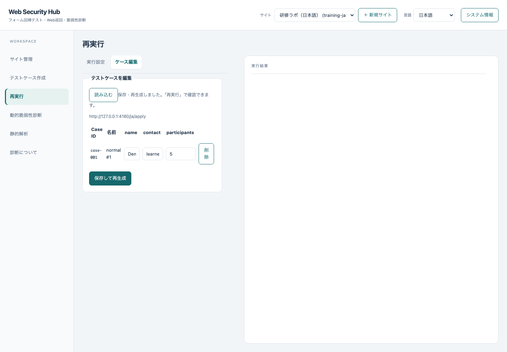
T07 ベースラインを記録する
サンプルを基本版にします。
npm run training:mode -- baseline
「実行設定」タブに戻り、「比較先 URL」は空欄、ZAP のチェックはすべてオフのまま、「ベースラインを記録」を押します。
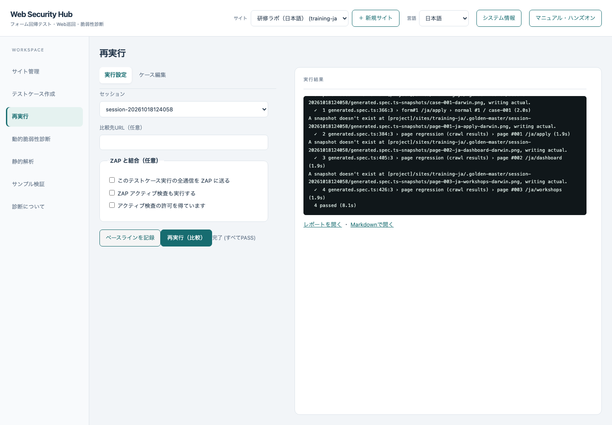
次に「再実行（比較）」を押します。変更していないので、すべて PASS になることを確認します。
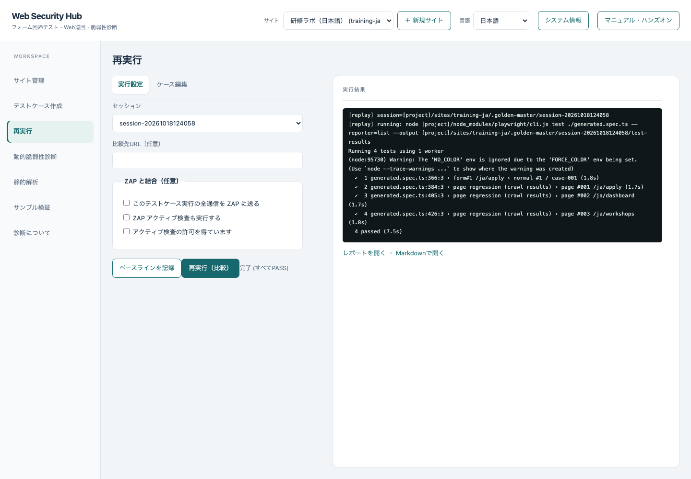
画像比較にはフォームケースに加え、巡回したページも含まれます。テスト件数が編集したケース数より多くなるのは正常です。
T08 変更を検出し、修正を確認する
npm run training:mode -- changed
同じセッションの「再実行（比較）」を押します。上限が 3 人に変わるため 5 人の申請が完了画面に進まず、フォーム画面にも差分が出ます。「差分あり」を確認し、ログにある expected / actual / diff 画像の保存先を確認します。画像はセッションの test-results/ 配下など、Playwright がログに示す場所に保存されます。
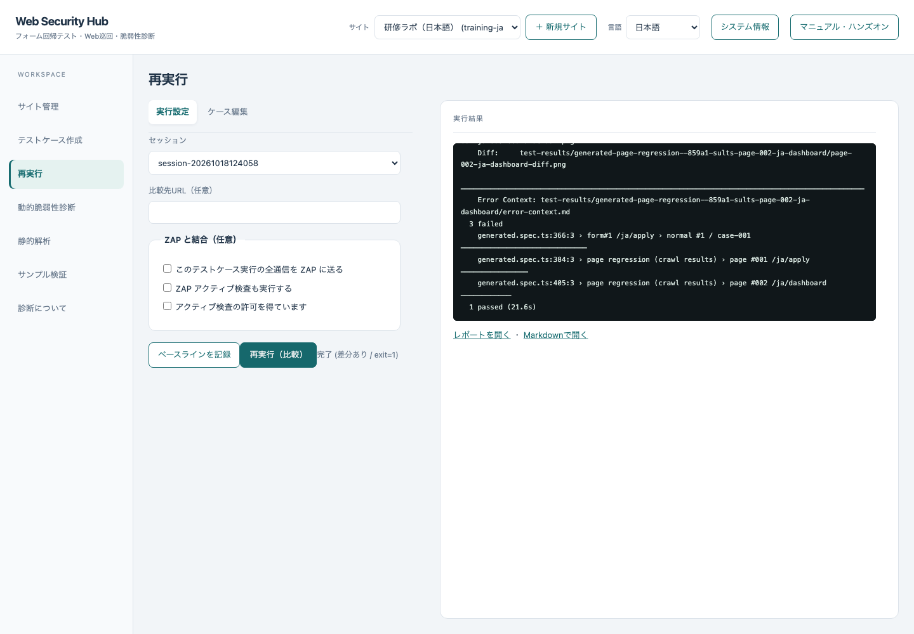
この時点で「ベースラインを記録」は押しません。 押すと変更版が新しい正解になります。
npm run training:mode -- fixed
再び「再実行（比較）」を押し、すべて PASS に戻ることを確認します。修正版は元の人数上限と表示を復元します。
T09 動的診断を実行する
「動的脆弱性診断」で開始 URL がサンプルであることを確認し、「選択中サイトの保存済みシナリオを使用する」「診断の明示的な許可を得ています」にチェックします。最大ページ数は 1。ZAP とアクティブ検査はオフです。「診断を開始」を押します。
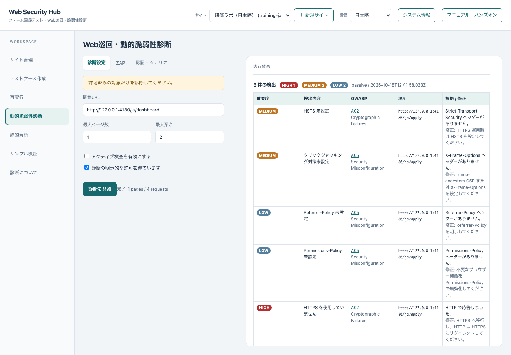
次に npm run training:mode -- changed を実行し、同じ診断を繰り返します。変更版で CSP と MIME sniffing 防止ヘッダーの指摘が追加されることを確認します。
npm run training:mode -- fixed で修正版に戻し、再診断すると、この二つの指摘が消えます。ローカル HTTP、その他のヘッダーに関する指摘は残ります。この演習は「検出ゼロ」を目標にせず、変更した項目と診断結果の対応を確認します。
T10 静的解析を実行する
「静的解析」に、リポジトリ内の training/sast/before の絶対パスを入力し、開始します。macOS / Linux ではルートで pwd を実行し、末尾に /training/sast/before を付けます。Windows PowerShell では (Resolve-Path training/sast/before).Path で確認できます。
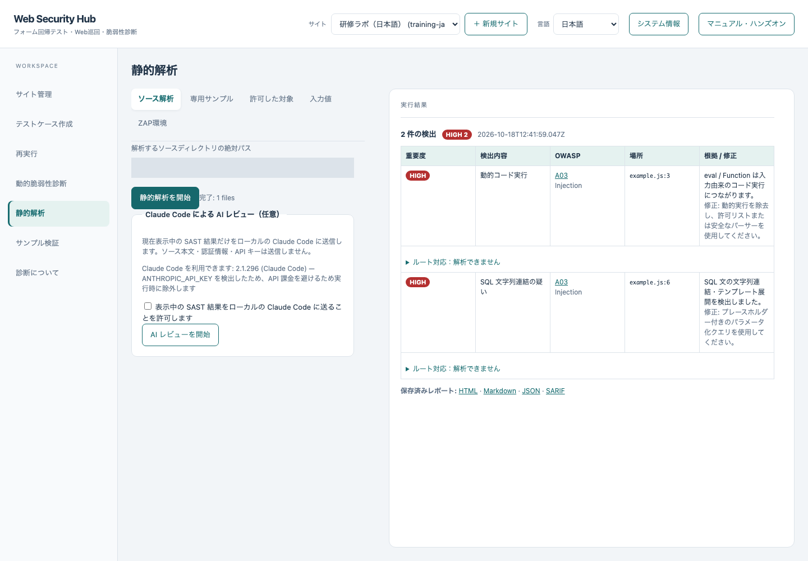
期待するルールは SAST-DANGEROUS-EVAL と SAST-SQL-CONCAT です。これらのソース例は教材専用で、サンプルサーバーから実行されません。
次に training/sast/after の絶対パスへ変えて再実行します。検出が 0 になることを確認します。ただし、このスキャナーで検出されないことがコード全体の安全性を保証するわけではありません。HTML / JSON / Markdown / SARIF のリンクから証跡を確認できます。
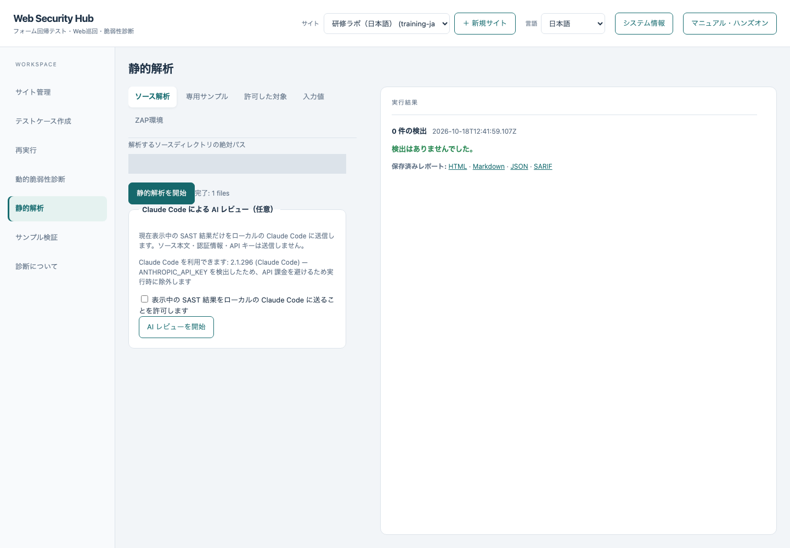
T11 終了と次の演習
サンプルを npm run training:mode -- reset で戻し、Hub とサンプルのターミナルでそれぞれ Ctrl+C を押します。演習記録としてセッション ID、変更した入力値、差分の理由、DAST の追加指摘、SAST のルール ID を残してください。
次は 機能対応表 を見て、ZAP、探索、変数・共有ステップ、ブラウザー切替などの応用へ進めます。
困ったとき
| 症状 |
確認と対処 |
| 起動できない／EADDRINUSE |
4173 と 4180 の利用状況を確認。自動撮影・検証は両ポートを使うため手動起動を終了してから実行 |
| ブラウザーがないと言われる |
npx playwright install chromium を再実行 |
| ログインできない |
メール・パスワードと #email / #password / #sign-in を確認。設定を戻すなら training:setup -- --reset |
| 記録ブラウザーが開かない |
デスクトップ環境が必要。T04 の JSON を使って先へ進む |
| フォームが見つからない |
シナリオの最後が /ja/apply か確認。送信やログアウトを記録していたら取り除いて保存 |
| 初回比較で差分になる |
T07 のベースライン記録が済んでいるか、同じセッションか確認 |
| 修正版でも差分が残る |
編集ケースが保存済みか、サンプルのモードが fixed か確認。OS・ブラウザー・フォント・画面倍率が違う場合は環境を揃える |
| ページ数・件数が画像と異なる |
記録経路、設定、バージョンにより変動。完了状態と期待した入力・差分を確認 |
画面画像は実際のアプリから撮影したものです。撮影条件は manifest.json を参照してください。Hub の実行ログ・生成ケース名・診断根拠の一部は、英語 UI でも日本語で出力される現状があります。英語版教材には意味と確認方法を併記しています。